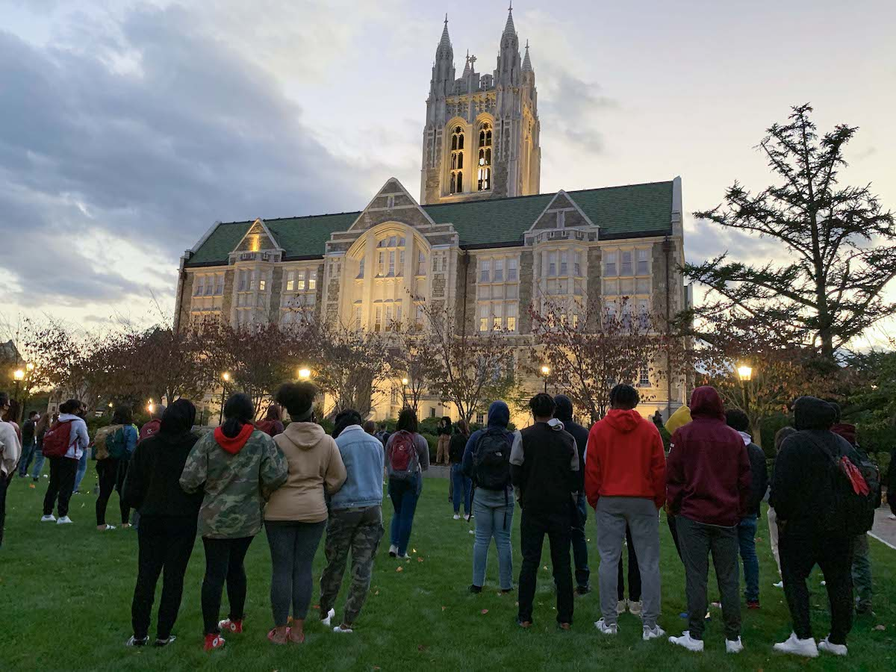
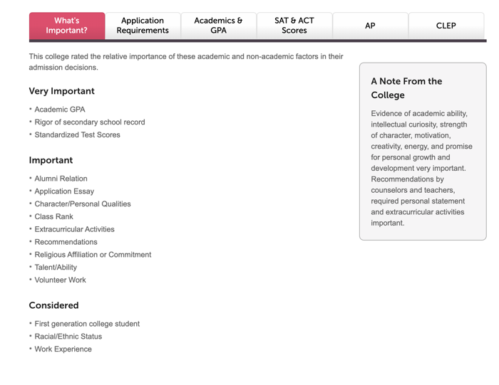

On the gray fall afternoon of September 24th, Boston College students and faculty gathered on the O'Neill Quad for a vigil in memory of Black women and girls killed by police.
The vigil came after the senseless killing of another black woman—this time in Kentucky at the hands of law enforcement.
Students gather to honor Black women
Kathryn Destin, a junior at Boston College was one of the speakers at the vigil. She lives with the struggles that come with being a student of color on a predominantly white campus.
“I would lie if I said that being black on campus has been absolutely smooth sailing,” Destin said. “It’s been emotionally taxing to be a part of 4.5% of Black students at a predominantly white institution that has made it clear that my mental health is not a priority.”
In 2019, white students on BC’s campus made up 65.9 % of the undergraduate student body while nationally, 54% of all college students were white.
Last fall, 4.5% of BC’s undergraduate students were Black, a number that has only increased by 1.5% since 1980, according to BC’s fact books. Federal data shows that the average percentage of Black students on college campuses nationwide is 13.9% .
BC is not the only prominent university with such a small percentage of Black students. Black students at top educational institutions such as MIT, Northeastern, and Tufts make up less than 5% of the student body, at Boston University, it’s 4%. An even more startling statistic: Black student enrollment at all of these top notch schools has only increased by less than 2% over the past 40 years.
“I get a bit angry because how is it that the same problems that I faced when I entered college in 2003 are still around and, in some ways, getting worse for students a decade and a half later,” said Anthony Jack, an assistant professor of Education at the Harvard Graduate school of Education.
When BC opened, in 1863, its mission statement was “to educate Boston's predominantly Irish, Catholic immigrant community.” BC doesn’t appear to have strayed very far from that mission as it is still educating a predominantly white community today. In fact, in 2019, 65.9% of BC’s student body was white.
“It’s harder to diversify that space, if that space has not been very diverse historically,” says Norm Jones, Director of Diversity at Amherst College.
And BC Officials say that there are other factors impacting diversity at the college.
“Most students will only travel about 150-200 miles from home to go to college,” said Gosselin. “And BC is located in a less diverse part of the country.”
However, Amherst College, which is located in rural Massachusetts, only a few hours west of BC, is both a highly diverse and highly selective school with 11% black student enrollment. Norm Jones attributes Amherst’s success in diversity to its need-blind admissions process. While BC is also a need-blind institution, Amherst also has a robust set of diversity outreach programs to thank for its high enrollment of Black students.
For example, one of their most successful programs is Access to Amherst which pays for low-income students and students of color to visit Amherst’s campus before they even apply. The college also visits many low income and majority minority high schools.
Jack McDevitt, director of Northeastern University’s Institute on Race and Justice stated that another reason that colleges like BC have only a small percentage of black students is because of the daily challenges students of color face on campus.
According to an article from Howard University, minority students at predominantly White college campuses may be especially likely to experience racial harassment because of the racialized character of the setting.
BC has been no exception, in Boston College’s Clery Reports—which indicate crimes on campus, reported that from 2015-2018, there was at least one. In 2017, there were five. In the same year, there were 78 total incidents of vandalism involving racial bias. at all 4-year non-profit colleges.
In 2018 The Heights reported that Michael Sorkin, CSOM’21 vandalized Welch Hall, with writings of racial slurs across furniture, and walls. Sorkin was suspended indefinitely and accepted a plea deal.
“It sucks that these weren’t the best four years of my life because of how BC has handled incidents of racism,” said Destin, who had hoped to see BC take a stronger stance by expelling Sorkin. “This is supposed to be a fun time in my life and I’m supposed to feel safe but I don’t.”
Destin and other Black students on campus not only have to contend with the explicit racism of hate crimes like the one in Welch Hall, but they also feel as though they don’t look like they belong on campus.
“I’ve woken up to endless social media posts of women who meet the Eurocentric beauty standards of this campus, leading me to feel I was the biggest and ugliest eyesore to walk across this lawn,” said Destin.
McDevitt said that one of the main reasons why many colleges lack diversity in their student body is that many students of color come from under-resourced school systems that make it difficult for students to achieve their full potential let alone achieve the grades and standardized test scores required for BC admission.
In fact, the U.S. Department of Education reports that students from urban schools with high levels of poverty don’t have the same access to resources and their schools have significantly less funding from state and local government.
“Some students of color come from urban school systems that aren’t the best … and that doesn’t mean they couldn’t be successful and contribute to the community,” McDevitt said.
For schools like BC, this may mean looking past students standardized test scores. While Gosselin claims that the admissions process looks at the whole student, BC’s CollegeBoard profile shows that “Rigor of secondary school record” and “Standardized test scores” are listed as “Very Important” in the admissions process. Students’ race and ethnicity as well as first generation status are listed only as “Considered” factors.
Joana Maynard, Senior Assistant Director of AHANA, shed light on one of the reasons for BC’s students being just 4.5% African-American.
“As a person of color in the Boston College community you are going to anticipate some microaggressions or full out racial turmoil,” said Maynard.
Grant Gosselin, BC’s director of Undergraduate Admissions, defends its treatment of students of color.
“The university does an extraordinary amount to support our students of color,” said Gosselin.
One program he points to is Options Through Education, a summer community-building program for incoming freshmen who have demonstrated potential and leadership in spite of challenging educational and financial circumstances.
“OTE is an exceptional program in that it offers the opportunity for underrepresented students from all walks of life to receive a Jesuit education at Boston College,” said BAIC Director Michael Davidson, S.J.
“Students are given support in their transition to BC which continues for four years to make sure that they actually persist and graduate, and not just have an okay experience,” said Maynard.
Gosselin also cites BC’s AHANA center, which represents people of African, Hispanic, Asian, and Native American descent, and supports them in navigating college life and fulfilling their potential. Specifically, Gosselin points to AHANA+ Weekend, in which AHANA+ students who have been accepted into the incoming class visit campus and stay with a student mentor for a weekend.
“We’re extremely pleased with the size, diversity, and quality of the applicant pool for BC’s Class of 2024,” Gosselin said. “I’m proud of the efforts that we make. I think people don’t realize how much actually goes into enrolling 135 Black students.” In total, the class of 2024 has 2,408 students.
Another factor that might impact the number of black students on campus is the pool where BC draws its applicants from. For the Class of 2023, BC received 5,393 applications from Massachusetts, 3,013 from New Jersey, and 4,309 from New York, each of these states have predominantly white populations.
In comparison the number of students applying from southern states with a high concentration of African-Americans were dramatically lower. Applications from Alabama numbered only 50, Georgia 356, Louisiana 77 and Mississippi 19.
Although BC says it has attempted to make strides with the implementation of OTE and broadening its recruiting to increase diversity on campus, the statistics suggest that the university needs to change its approach in order to make significant progress.
“BC has to continue and improve on changing the narrative of being a primarily white institution. It can’t just be window dressing. Implementing programs isn’t enough, we need to follow through,” said Maynard.
“You’re going to be a lone voice on campus, there’s going to be not that many people who look like you,” McDevitt said. “And that’s a lot to ask someone to put up with.”
Ali Soumahoro, MCAS ’22, said that Black students at BC are often singled out in discussions about Black culture and racial justice. Being asked to represent their entire race, Soumahoro said, can put an intense amount of pressure on Black students like himself.
“People tend to give us an eye, especially if I am the only Black person in the class,” Soumahoro said. “People have this expectation for you to always speak out, which is kind of weird and uncomfortable at the same time. … Everyone’s looking at you and low-key trying to pressure you.”
McDevitt said that faculty members often will look to students of color to give the perspective of their group.
“The pressure and the burden of that is enough to make students want to go to a place where there are more people like them,” he said.
Prince Lucas, a Black singer-songwriter and MCAS ’22, said that the small percentage of black students on BC’s campus make students of color unfairly feel like they must serve as a representative of their race.
“It’s not my job to feel like I always have to represent everybody—it puts pressure on my actions though as well,” Lucas said.
Lucas was the opening act for the Campus Activities Board’s Boston City Limits concert last year. He described low turnout at the event as just one example of the lack of diversity on campus.
“Usually CAB will be bringing in a ton of people,” Lucas said. “Once they changed the artist and made it more R&B rather than EDM the previous year, the turnout was much less.”
McDevitt argues that schools must look beyond past performance and toward indicators of future performance to recruit more students of color from historically disadvantaged communities.
“Schools have to take a chance—they have to look more closely at potential rather than grades,” McDevitt said. “And if they did that, they would bring more students of color in.”
While the statistics show that BC has a long way to go in increasing the diversity of the student body, particularly Black and African American students, new programs that the university has instituted are aimed at closing gaps driven by discrimination and poverty.
The Forum for Racial Justice in America, created at BC in response to the murder of George Floyd this past summer, is one such program. Vincent Rougeau, Dean of Boston College Law School and Director of the Forum is encouraged by what the creation of the forum means for diversity at BC.
“The Forum is sending a signal from the highest levels of the university that this is a priority of the institution,” said Rougeau. “When there is a mandate from the top that says this is something that we as an institution from top to bottom are going to focus on now, it gives new strength, new momentum to all of the efforts that everyone is engaged in.”
Rougeau hopes that the Forum will help lead to concrete actions in admissions, in faculty hiring, and in curriculum that will increase the diversity of BC.
Destin believes that to improve BC’s diversity the university needs to invest more energy in its efforts to attract Black students.
“That includes changing curriculums, hiring more faculty of color, encouraging student input and actually following through on student input and meeting their needs,” Destin said.
“To me, it’s a sign of laziness. There are students who are willing to come if they feel that they will be supported on campus. If you want black students to come to your institution you need to make your institution worth it.”